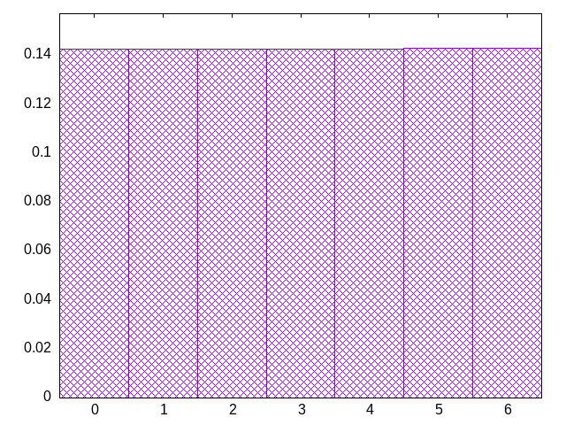
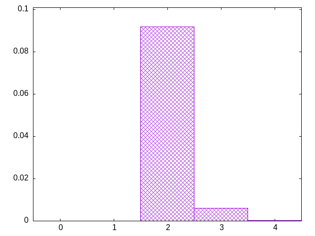

seamless variations on bag -- seamless 21-piece bag
ljoziijozssttjlltzsoiiljoztijozssztjlltsloiijzoitljozssztjzltsloiijozitljojsszttzlosljiizozitljojsssttzloiljjizozitllojsssttzsoiljjizozitllojlssttzsoijjjizozitllozlssttjsoiojjizozitlljzlsstttsoiojjizoziilljzlsstttsosojjizoziilljzljstttsosoljizoziijlszljsttttosoljizoziijlszljsjtttosollizoziijoszljsjtttjsollizoziizossljjotttjssllizoziizoosljjtsttjzslliojziizooslljtsttjzstliojziizooslljjsttlzsttiojziizooslljjsstlzjttiojziizoosllojsstlzjttiojziiztosllojssjlztztiojliiztosloljssjiztztlojtiizlostoljssjiztzzlojtiisloitoljssjjztzzloztiisloitoljssjjjtzzloztiisloitolissjjjtzzloztitsloijolisssjjtzzloztitoltijolisssjjszzloztitoltijolilssjjszzjoztitoltiiolzlssjjszijoztitoltjiolzlsszjslijoztitostjiolzltszjslijoztiiostjloozltszjslijsztiiojtiloozltszjsltjszoiiljtizootllszjstojszsiiljtizootlllzjstojszsiizjtizootlllljstojszsiizjtizootjlllsltojszsiizjtizootjollslttjszsiizjsizootjollolttjszsiizjsizsotjollolttjizslizjsizsotjojlolttiztslizjsizsotjojlolztistllizjsizsotjojjolztistllizlsizsotjojjojztistllizlsiz
bagginess: 0.0172
bagginess6: 0.2651
distribution1_maxgap: 4.799999999999249e-05
distribution2_maxgap: 0.005541005541005539
distribution3_maxgap: 0.001126002252004504
distribution4_maxgap: 8.300024900074701e-05
diversity: 5.0
entropy: 11.442
evenness_diff: 6.541
evenness_same: 5.087
maxdrought: 19.0
maxflood: 4
peakdrought: 0.0
repchance: 0.1047
seq4_coverage: 1.0000
seq4_follow: 6.717
distribution1_graph:

flood_graph:

similarity: (lower is more similar)
| 0.018 | balanced_long_add_pure |
| 0.020 | seamless_bag2_pure |
| 0.023 | deepbag_window10 |
| 0.023 | deepbag_fixed10 |
| 0.025 | bag3 |
| 0.027 | shift10_5 |
| 0.032 | bag4 |
| 0.037 | deepbag_window7 |
| 0.052 | balanced9 |
| 0.055 | shift14 |
| 0.056 | balanced_long_mul_pure |
| 0.062 | shift21 |
| 0.062 | wet3 |
| 0.073 | shift7 |
| 0.089 | bag2 |
| 0.105 | nes_pure |
| 0.143 | nes |
| 0.191 | fullrandom_pure |
| 0.214 | fullrandom |
| 0.225 | wet2_size100 |
| 0.234 | wet2 |
| 0.236 | weight_lin_pure |
| 0.251 | weight2 |
| 0.253 | deepbag_fixed7 |
| 0.290 | balanced5 |
| 0.293 | balanced7 |
| 0.294 | deepbag_window4 |
| 0.382 | weight |
| 0.413 | wet3_size12 |
| 0.432 | seamless_deep_pure |
| 0.540 | tgm |
| 0.547 | tgm_pure |
| 0.573 | deepbag_fixed4 |
| 0.610 | bag |
| 0.618 | bag_pure |
| 0.655 | shift3_5 |
| 0.763 | tgm_tap |
| 0.766 | tgm_tap_pure |
| 0.860 | weight_exp |
| 0.862 | wet_pure |
| 0.865 | ti |
| 0.957 | weight_exp_pure |
| 1.034 | wet |
| 1.116 | seamless_bag_pure |
| 2.071 | repeat_recent_pure |
| 2.787 | shift1_75 |
| 4.310 | repeat_last_pure |
| 8.879 | flatbag |
| 8.879 | flatbag_pure |